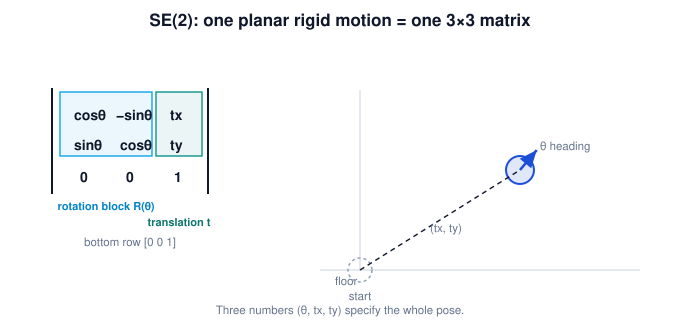

You are here
Module 2 — Spatial Transformations and SE(3) · Unit 3 — SE(2) Transformations · Lesson 3.2 — The SE(2) Transformation
Lesson 3.2 — The SE(2) Transformation¶
1. Why This Matters¶
We have the idea (rigid motion, Lesson 3.1) and the tool (a 3×3 matrix that rotates and translates, Lesson 2.4). Putting them together gives SE(2) — the family of all planar rigid motions, each a single 3×3 matrix. This is the working representation for a robot moving in a plane: every pose, every base move, every frame relationship on the greenhouse floor is an SE(2) matrix. Naming it and reading its structure fluently is the core skill of this unit.
2. Physical Intuition¶
"SE(2)" is just a label for "a rigid move in 2D": a turn plus a slide. Think of sliding a coaster across a table to a new spot and angle — that single act is one SE(2) element. The matrix that records it has two readable parts: the upper-left says how much it turned, and the last column says where it moved. Once you know where to look, you can read a robot's planar motion straight off the matrix.
3. Mathematical Foundations¶
An SE(2) transformation (Special Euclidean group in 2D) is a 3×3 homogeneous matrix:
The upper-left \(2\times2\) block \(R(\theta)\) is a pure rotation (orthogonal, \(\det = +1\)) — this is what makes the motion rigid and orientation-preserving. The last column \(\mathbf{t}=(t_x, t_y)\) is the translation. The bottom row is always \([0\ 0\ 1]\). Three numbers fully specify it: \(\theta, t_x, t_y\). "Special" = \(\det R = +1\) (no reflection); "Euclidean" = preserves Euclidean distance (rigid). Every planar rigid motion is exactly one such matrix.
4. Visual Explanation¶

5. Engineering Example¶
The robot's base pose on the greenhouse floor is an SE(2) matrix: its heading fills the rotation block, its (x, y) position fills the translation column. When the base drives to a new spot and turns, that's a new SE(2) matrix. The relationship "where the arm's mount sits relative to the base" is also SE(2). Planar navigation and planar frame bookkeeping are entirely SE(2) arithmetic.
6. Worked Example¶
A robot is at position \((2, 1)\) on the floor, heading \(90°\). Its pose as an SE(2) matrix: $\(T = \begin{bmatrix} \cos 90° & -\sin 90° & 2 \\ \sin 90° & \cos 90° & 1 \\ 0 & 0 & 1 \end{bmatrix} = \begin{bmatrix} 0 & -1 & 2 \\ 1 & 0 & 1 \\ 0 & 0 & 1 \end{bmatrix}.\)$ Read it back: rotation block = \(90°\) turn, translation column = moved to \((2, 1)\). Three numbers \((\theta, t_x, t_y) = (90°, 2, 1)\) capture the whole pose.
7. Interactive Demonstration¶
Guided prediction. Given \((\theta, t_x, t_y) = (90°, 2, 1)\), predict each of the six non-trivial entries of the 3×3 matrix before writing them. Then, reading only a matrix with rotation block \(\begin{bmatrix}1&0\\0&1\end{bmatrix}\) and translation column \((3, 0)\), predict the robot's heading and position. Confirm against the structure in the figure.
8. Coding Exercise¶
Run the hands-on notebook
modules/module02/notebooks/M02_U03_L3_2_The_SE2_Transformation.ipynb — open in JupyterLab and run Kernel → Restart & Run All.
Write a function se2(theta, tx, ty) returning the 3×3 matrix, and an inverse reader that recovers \((\theta, t_x, t_y)\) from a matrix; round-trip a few poses.
9. Knowledge Check¶
Formative — unlimited attempts, immediate feedback; does not affect your grade.
A check on SE(2) structure: rotation block, translation column, [0 0 1], and that three numbers specify it.
10. Challenge Problem¶
A matrix has upper-left block \(\begin{bmatrix}2&0\\0&2\end{bmatrix}\) and last column \((1, 1)\). Explain why this is not a valid SE(2) element, and what property of the rotation block SE(2) requires.
11. Common Mistakes¶
- Putting a scaling or shear in the upper-left block (then it's not SE(2)).
- Forgetting the bottom row \([0\ 0\ 1]\).
- Confusing the translation column with the bottom row.
12. Key Takeaways¶
- SE(2) = all planar rigid motions, each a 3×3 homogeneous matrix.
- Structure: pure-rotation block (upper-left), translation column (right), [0 0 1] (bottom).
- Three numbers \((\theta, t_x, t_y)\) specify any SE(2) element.
- It represents robot poses and planar frame relationships directly.
AI Learning Companion¶
Copy any prompt below into ChatGPT, Claude, or another AI assistant.
Tutor prompt — explain it another way
Explain Lesson 3.2 (Module 2) — The SE(2) Transformation — as "a turn plus a slide" written in one 3x3 matrix. Point out where the rotation, translation, and bottom row live, and what (theta, tx, ty) mean.
Practice prompt — generate more exercises
Give me 6 exercises building SE(2) matrices from (theta, tx, ty) and reading (theta, tx, ty) back from a matrix, in a greenhouse-robot context. Include answers.
Explore prompt — connect it to the real world
Show me how a mobile robot's base pose and its sensor mounts are represented as SE(2) matrices, and how driving to a new spot changes the matrix.
Global Learning Support¶
Need this lesson explained in another language? Copy one of the prompts below into an AI assistant. English remains the authoritative source.
Supported languages (initial): English · Español · 中文 (Simplified Chinese) · Türkçe
Español
I just completed Lesson 3.2 (Module 2) — The SE(2) Transformation.
Explain this lesson in Spanish. Keep robotics and mathematical terminology in English when appropriate.
Then provide: a summary, three practice questions, and one challenge problem.
中文 (Simplified Chinese)
I just completed Lesson 3.2 (Module 2) — The SE(2) Transformation.
Explain this lesson in Simplified Chinese. Keep mathematical notation unchanged.
Then provide: a summary, three practice questions, and one challenge problem.
Türkçe
I just completed Lesson 3.2 (Module 2) — The SE(2) Transformation.
Explain this lesson in Turkish. Keep robotics terminology in English where commonly used.
Then provide: a summary, three practice questions, and one challenge problem.
Next lesson: 3.3 — Applying SE(2) to Points and Shapes.